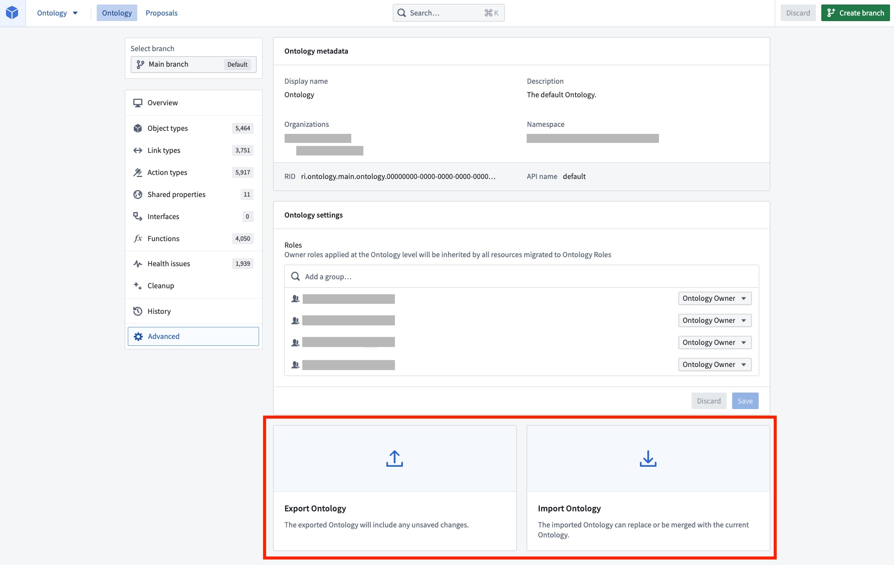

:::callout{theme="neutral"} You should not depend on the exported JSON schema as it may change over time. :::
Ontology schema definitions are stored in a JSON file â. An Ontology JSON file can be exported and edited with a code editor or text editor before being imported back into Foundry. This import/export functionality enables two workflows for advanced users:

You can export your Ontology working state by selecting the Advanced settings page from the applicationâs home page and then selecting Export.
:::callout{theme="neutral"} Any changes you have in your working state will be included in the export. :::
You can import a previously exported Ontology working state by selecting the Advanced settings page from the applicationâs home page and then selecting Import. You will be prompted to choose an Ontology file from your local drive.
Next, select Import, which will recreate the entire working state from the JSON file in the application. You will see the number of changes made in the file that need to be saved in the application header.
:::callout{theme="neutral"} An exported Ontology working state with conditional formatting rules configured on its properties cannot be imported to an Ontology other than the one it was exported from. :::
OntologyMetadata:UnreferencedRuleSetsIf you receive the error OntologyMetadata:UnreferencedRuleSets, you are trying to import an Ontology working state with conditional formatting rules that are not defined in that Ontology and cannot be transferred over. You will need to delete the conditional formatting rules from the Ontology working state before importing.